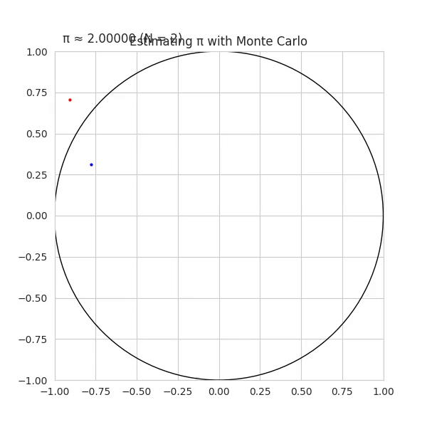
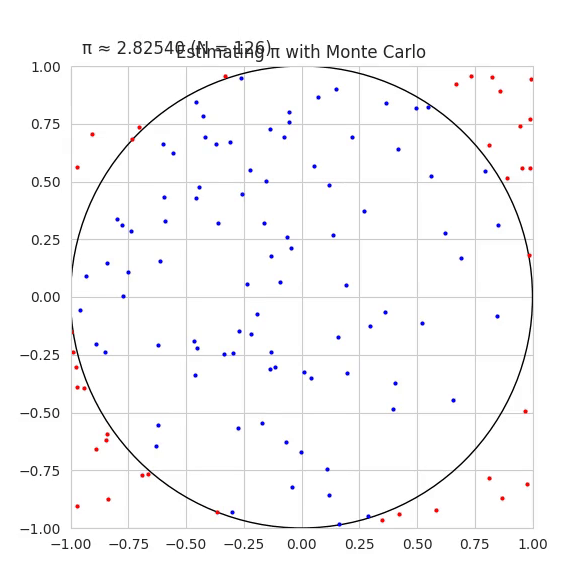
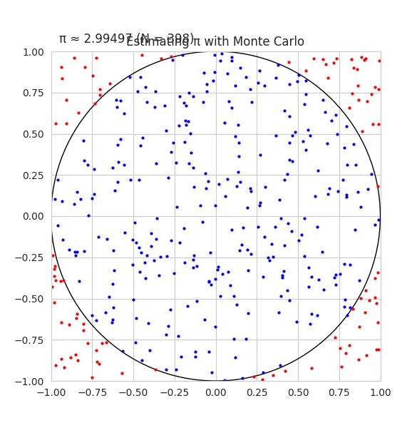
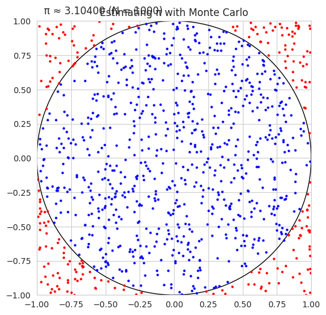
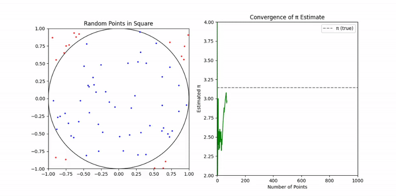
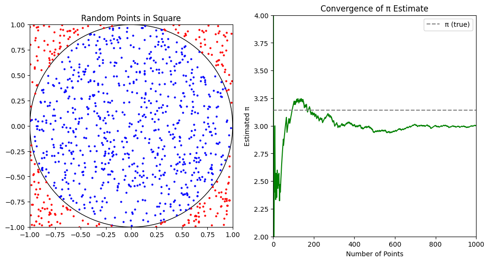

Problem 2
Estimating \(\pi\) using Monte Carlo Methods
1. Theoretical Foundation
To estimate \(\pi\) using random points, consider a unit circle inscribed in a square. The circle has a radius \(r = 1\), and the square spans from \(-1\) to \(1\) in both \(x\) and \(y\) directions.
The area of the unit circle is:
The area of the square is:
If we randomly generate points uniformly within the square, the probability that a point lies inside the circle is:
Solving for \(\pi\) gives:
2. Simulation
- Generate \(N\) random points \((x, y)\) in the square \([-1, 1] \times [-1, 1]\).
- Count how many fall inside the unit circle (i.e., those satisfying \(x^2 + y^2 \leq 1\)).
- Estimate \(\pi\) using:
3. Visualization
A plot can show:
- Points inside the circle in blue
- Points outside the circle in red
- The unit circle boundary
This visually demonstrates how random sampling approximates the circle's area.
4. Analysis
- As \(N \rightarrow \infty\), the estimate of \(\pi\) converges to the true value.
- The convergence rate is \(O(1/\sqrt{N})\), typical for Monte Carlo methods.
- Accuracy increases slowly, so large numbers of samples are needed for high precision.
- Monte Carlo integration is simple but computationally inefficient compared to analytical methods.
Part 2: Estimating \(\pi\) Using Buffon’s Needle
1. Theoretical Foundation
Buffon's Needle is a probability problem: Drop a needle of length \(L\) onto a plane with parallel lines spaced a distance \(d\) apart (\(L \leq d\)). The probability that the needle crosses a line is:
Rearranging to estimate \(\pi\):
Where: - \(N_{\text{total}}\) = total number of needle drops - \(N_{\text{cross}}\) = number of times the needle crosses a line
2. Simulation
- Randomly simulate dropping a needle:
- Random angle \(\theta \in [0, \pi]\)
- Random distance from center to nearest line \(x \in [0, d/2]\)
- The needle crosses a line if:
- Count the number of crossings and estimate \(\pi\):
3. Visualization
A diagram should show:
- Horizontal parallel lines spaced at distance \(d\)
- Needles randomly placed, with crossing ones in a distinct color
- This illustrates the relationship between geometry and probability
4. Analysis
- Like the circle method, this converges slowly: \(O(1/\sqrt{N})\)
- More complex to implement due to trigonometric calculations
- It offers historical and theoretical interest but is less practical for accurate estimation of \(\pi\)
- For small numbers of trials, the result is very noisy
Comparison of Methods
| Method | Convergence Rate | Complexity | Practicality |
|---|---|---|---|
| Monte Carlo Circle | \(O(1/\sqrt{N})\) | Easy | High |
| Buffon’s Needle | \(O(1/\sqrt{N})\) | Moderate | Moderate |
Both methods highlight the deep connections between geometry, probability, and numerical estimation.
Animation




Animation
import numpy as np
import matplotlib.pyplot as plt
from matplotlib.animation import FuncAnimation
from IPython.display import HTML
# Use default style for compatibility
plt.style.use('default')
# Simulation settings
total_points = 1000
x = np.random.uniform(-1, 1, total_points)
y = np.random.uniform(-1, 1, total_points)
# Setup figure with two subplots
fig, (ax_circle, ax_pi) = plt.subplots(1, 2, figsize=(12, 6))
# Left plot: Unit circle
ax_circle.set_xlim(-1, 1)
ax_circle.set_ylim(-1, 1)
ax_circle.set_aspect('equal')
ax_circle.set_title('Random Points in Square')
circle = plt.Circle((0, 0), 1, color='black', fill=False)
ax_circle.add_patch(circle)
inside_scatter = ax_circle.plot([], [], 'bo', markersize=2, label='Inside')[0]
outside_scatter = ax_circle.plot([], [], 'ro', markersize=2, label='Outside')[0]
# Right plot: π estimate over time
ax_pi.set_xlim(0, total_points)
ax_pi.set_ylim(2, 4)
ax_pi.set_title('Convergence of π Estimate')
ax_pi.set_xlabel('Number of Points')
ax_pi.set_ylabel('Estimated π')
line_pi, = ax_pi.plot([], [], 'g-')
true_pi = np.pi
ax_pi.axhline(y=true_pi, color='gray', linestyle='--', label='π (true)')
ax_pi.legend()
# Storage
xin, yin = [], []
xout, yout = [], []
pi_estimates = []
def init():
inside_scatter.set_data([], [])
outside_scatter.set_data([], [])
line_pi.set_data([], [])
return inside_scatter, outside_scatter, line_pi
def update(i):
xi, yi = x[i], y[i]
if xi**2 + yi**2 <= 1:
xin.append(xi)
yin.append(yi)
else:
xout.append(xi)
yout.append(yi)
inside_scatter.set_data(xin, yin)
outside_scatter.set_data(xout, yout)
N = i + 1
pi_est = 4 * len(xin) / N
pi_estimates.append(pi_est)
line_pi.set_data(range(1, N + 1), pi_estimates)
return inside_scatter, outside_scatter, line_pi
anim = FuncAnimation(fig, update, frames=total_points, init_func=init,
interval=20, blit=True)
# Render animation as HTML5 video
HTML(anim.to_jshtml())


Estimating π using Monte Carlo Simulation
This animation demonstrates how we can estimate the value of π by simulating random points in a square that bounds a unit circle.
Theoretical Foundation
Consider a square of side length 2 centered at the origin, and a unit circle (radius = 1) also centered at the origin.
The area of the square is:
The area of the circle is:
If we randomly generate many points uniformly inside the square, the proportion that falls inside the circle approximates the ratio of the areas:
Solving for π:
Visualization Breakdown

Left Plot: Circle Simulation
- The blue dots represent random points that fall inside the unit circle.
- The red dots are points that fall outside the circle but still within the square.
- Over time, more points are added, improving the estimate.
Right Plot: π Convergence
- This chart shows how the estimated value of π changes as more points are added.
- The dashed horizontal line represents the true value of π.
- As the number of points increases, the estimate converges toward the true value due to the Law of Large Numbers.
Summary
This method: - Is easy to implement. - Demonstrates probabilistic estimation. - Converges slowly (requires a lot of points for high precision). - Visualizes the randomness and convergence beautifully.
Formula Recap
Where: - \( N_{\text{in}} \) = number of points inside the circle - \( N_{\text{total}} \) = total number of points sampled